Galactic Empire is a strategy game where you play as the Humans. Your mission is to conquer the galaxy by eliminating all opposing enemies. There are eight enemies competing for galactic domination. They are:
| 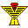 Gubrus |
| 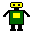 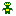Bots |
| 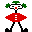 Bozos |
| 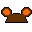 Mutants |
| 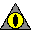 Czins |
|
|
| Nukes |
| Blobs |
You begin the game with one planet, called your home-planet, and one hundred ships. The enemies have the same. All planets have an industry. This is the number of ships they produce each game year. Home planets have an industry of 10.
In addition to the eight enemies listed above, there are one hundred Independent planets:
| Independent |
These planets do not participate, but will defend against attacks, so it's best to take them early before they amass a large number of ships. Independent planets have an industry between 0 and 7, inclusive, and begin the game with a Ship count equal to their industry.
The basic idea is to move ships from planet to planet to gain an advantage. Amass large quantities of ships to overtake opponents.
If you take over all enemy planets, and destroy all enemy ships, you win the game.
If all your planets are overtaken by enemies, and all your ships are destroyed during battle, you lose the game.
GameplayGameplay is broken up into years. You plan your moves based on available information, then click the "Do Battle" button. This will begin the battle process, which will increment the year in tenths, until a full year has passed.
Click on any planet to see ship count and industry about that planet.
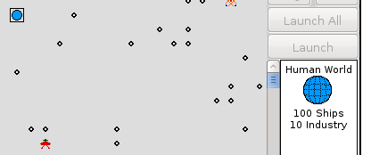Draw a line from any planet you own to any other planet to see the travel time in game years, and to activate the "Launch" buttons.
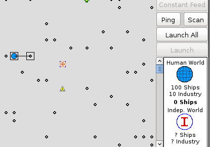To launch ships from any planet you own to any other planet, use the vertical slider to select the number of ships to send and click the "Launch" button.
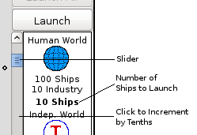Once you click the Launch button, the total number of ships on that planet will decrease by the number of ships launched. To launch all ships, click the "Launch All" button. The "Launch All" button will become disabled once you have selected any number of ships to send. If you have no ships to send, the slider and launch buttons are disabled.
Details about a planet may not be known.
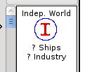The Ship count and Industry of a planet are visible for any planets that you own or have ever owned. Ship counts and Industry of a planet may be discovered by using the Ping and Scan tools. The Ping tool will launch a single ship at the target planet. When it arrives, you may see the Ship count for that planet for that year. If you send three pings, you may see the Ship count and Industry of the planet for the rest of the game. The Scan button sends three Pings.
Once you've conquered a planet, it's often useful to feed the ships that planet produces back to a home planet or staging planet. This process can be automated with the "Constant Feed" button. Simply draw a line from the source planet to the destination and click "Constant Feed".
The BattleWhen ships arrive at a planet one of two things occurs: they either fortify or they attack. If you own the planet, then the ships will be added to the total Ship count for that planet, fortifying the position. If you do not own the planet, then the ships will attack the planet.
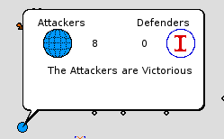When an attack occurs each side, in turn, fires a volley destroying the opposing sides ships. When one side reaches zero, the battle is over, and either the Defenders will have held the position, or the attackers will have been victorious. If the attackers win, then the planet becomes owned by the attacking force, the remaining attacking ships become that planets Ship count, and the attack window disappears.
The attack process is somewhat complicated. Generally, the defenders fire first, however, there is a one in six chance that the attackers will surprise the defenders and fire first. The number of ships firing is also randomized: between 70% and 100% of the ships on any given side will fire during a volley. For each ship that fires, there is a 50% chance of destroying an opposing ship.
Helpful HintsUse the "New Game" button to find a map with several planets close to your home planet.
Take as many Independent planets in the first two or three years as possible.
Make sufficient allowance for ship travel time. Your opponent could become much stronger before your attacking force arrives.
Attack opponents early, before they become too strong.
Liberal use of the "Scan" button will save you from costly battles.
Failure to defend your home planet will attract the attention of the Blobs.
Plan to spend about 1-2 hours per game.